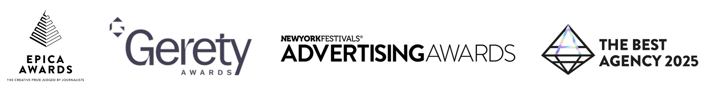
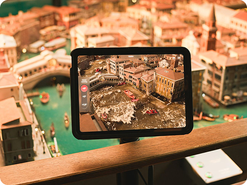
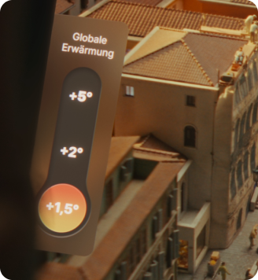
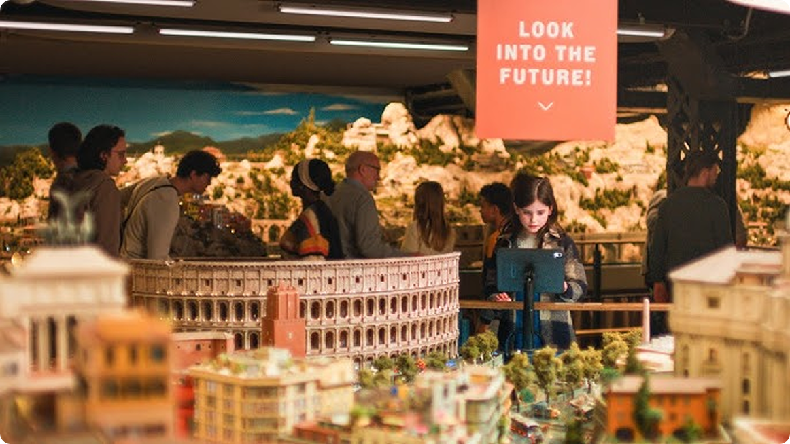
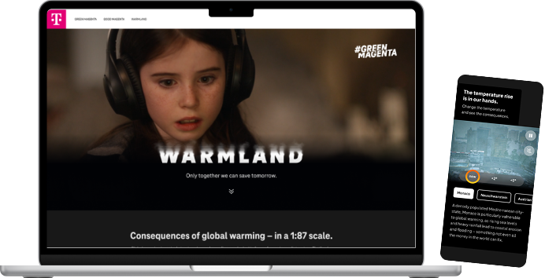
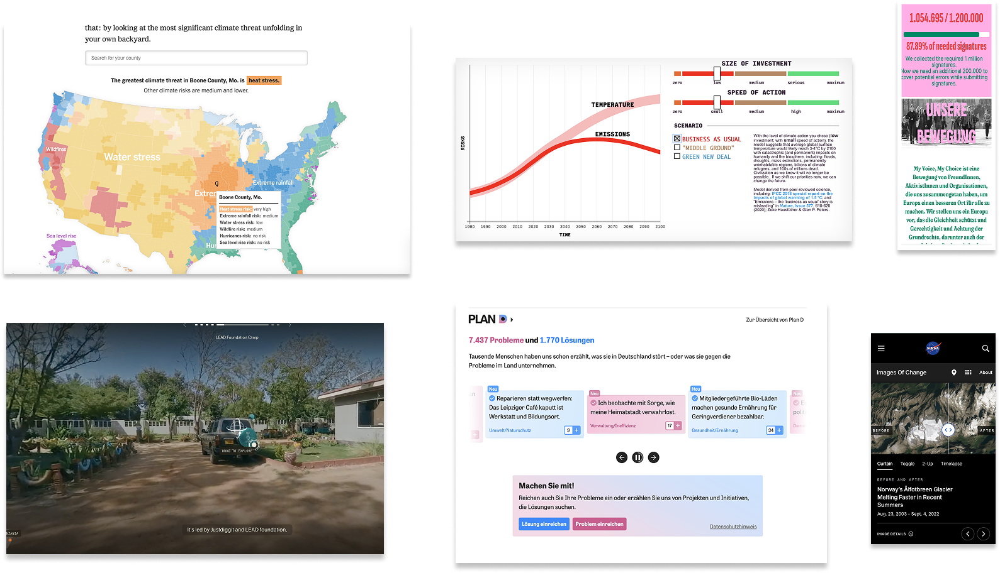
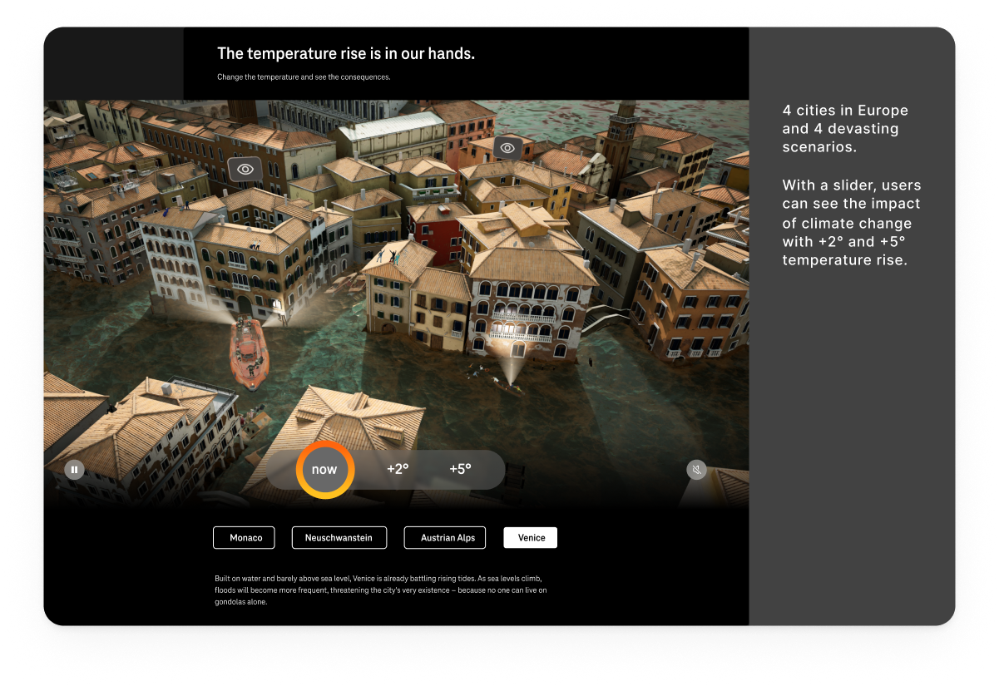
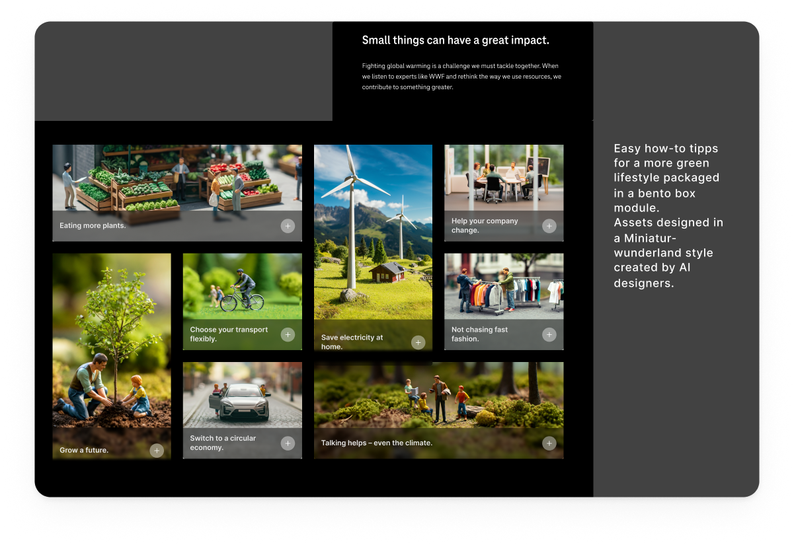
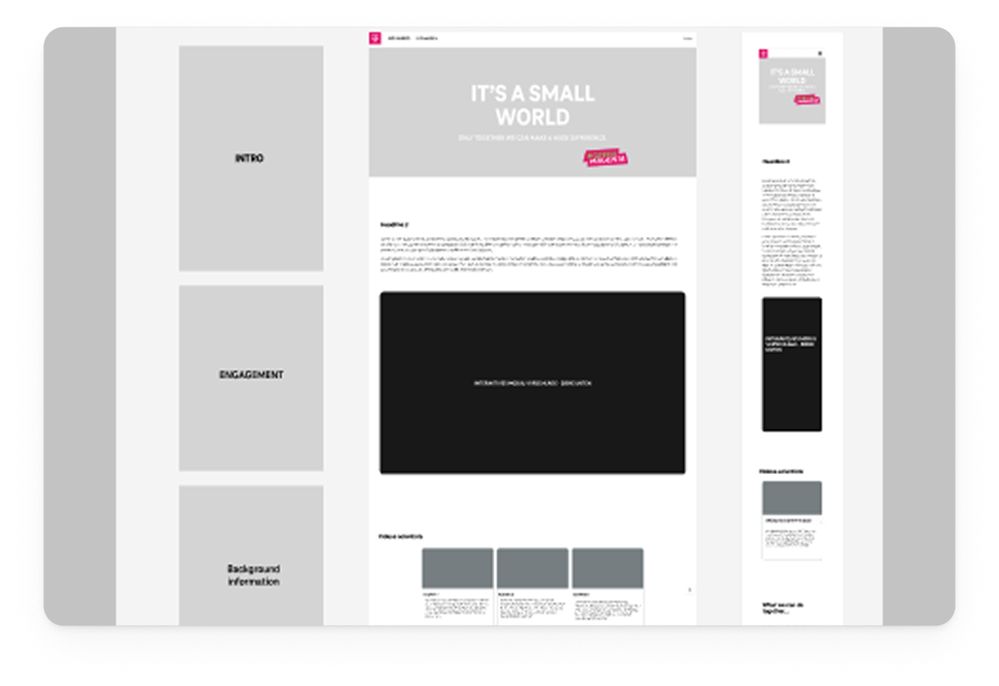
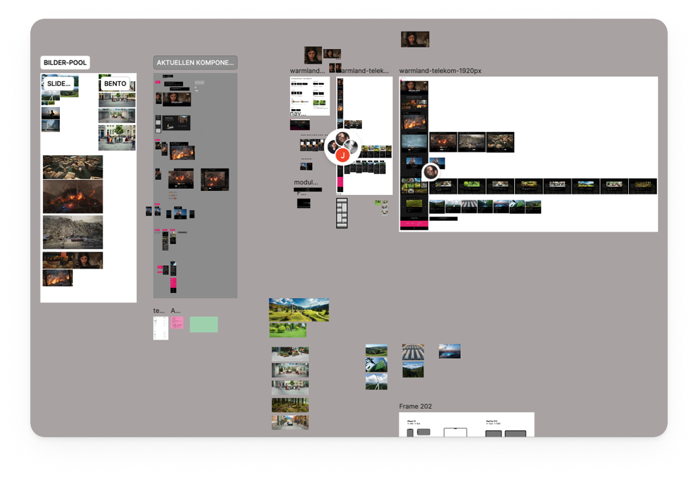

Brief
Create a landing page that showcases the campaign film and continues the storytelling beyond the physical AR exhibition.
experience design · web · interface design
As the lead UX designer at the agency, I was responsible for translating the physical AR exhibition experience into a web presence — from concept and storyline development with the creative team to UI and interaction design.

Campaign poster with key visuals, description and media results.

The first AR experience to bring global warming to Miniatur Wunderland, the world's largest miniature exhibit. Telekom brought the impact of global warming to this exhibition — beautiful, fragile, just like the real world. The perfect place to reveal the true size of this problem. Together with another agency, we created an AR experience and used the whole exhibition as a medium, turning Miniatur Wunderland into a first of its kind immersive experience — bringing the effects of global warming such as drought, flooding, wildfires, storms, and snow melting to locations like Neuschwanstein Castle, Venice, Monaco, and the Austrian Alps. The campaign generated enormous media attention and high emotional engagement from visitors.


Miniature figurines across different climate scenarios and UI slider for temperature control in the AR experience.



AR experience in the Miniatur Wunderland — visitors explore climate futures at 1:87 scale.
The brief was clear — but the real challenge was translating a physical, emotional experience into something that worked on a screen.
Create a landing page that showcases the campaign film and continues the storytelling beyond the physical AR exhibition.
Limited user research availability required strategic assumptions and competitive analysis to inform design decisions.
Make climate change impact tangible and actionable for diverse digital audiences.
I conducted competitive analysis of climate education platforms and interactive visualizations to identify patterns and best practices.
I analyzed user journey patterns across three key entry points: Green Magenta visitors, YouTube traffic, and post-exhibition users.
I collaborated with stakeholders — client, creative team, and external developers — to align on user needs and technical constraints.
Steps
CI briefing with creative department so that the campaign has a consistent look
Research of modules that interactively show impact of climate change
Evaluating needs for each section. What should be presented to user and why?
Creating lowfi and highfi wireframes and aligning with all stakeholders
Launch of campaign with AR experience, digital presences and other multi-channel media presence
Designing for emotional impact meant solving three interconnected challenges: making the abstract tangible, the physical digital, and the exclusive accessible.
Climate change feels abstract and overwhelming to most people, making it difficult to create emotional engagement through a digital landing page.
Created interactive modules that make environmental impact visual and personally relevant, translating the physical AR experience to the web.
Developed a hero module that brings the AR exhibition experience online — making the campaign accessible to audiences who couldn't visit in person.
User Entry Points

Climate change is very abstract to humans. We see the urgency, but it's difficult to act. Therefore, we wanted to find a way for people to easily contribute. Since research was limited, one of my first steps was to research what others have already done and how they visually present it. From moving images storytelling to donation campaigns and maps or graphs.

Collection of interactive web patterns exploring climate change communication.

Users can select a city and explore temperature scenarios to see the projected climate impact.

Bento box layout with AI-generated visuals consistent with Miniatur Wunderland figurines — presenting climate actions in a simple, non-overwhelming way.

Low-fi wireframe mapping the storyline and section structure.

High-fi wireframe captured from Figma.
The end result is a powerful fusion of art, technology, and storytelling. By taking the tiniest world and amplifying it with AR and digital craft, we created a compelling narrative about the future of our planet.
Miniatur Warmland was more than just a visual journey. It was a call to action. By experiencing the delicate balance of our miniature world and witnessing the potential consequences of global warming, visitors were prompted to reflect on the future and what role they could play in shaping it.
Campaign Film
Designing effectively when user research is limited — using competitive analysis, assumptions, and stakeholder alignment to move forward with confidence.
Aligning client, creative agency, and external development teams around shared user needs and technical constraints across a complex multi-party project.
Structuring a multi-audience digital experience across three distinct user entry points — each with different awareness levels and intent.
Translating complex climate data into visually engaging, personally relevant modules that create emotional impact without overwhelming the user.
Maintaining consistency between the physical AR exhibition experience and the digital landing page, extending campaign storytelling across touchpoints.
Bringing UX thinking into a cross-functional team where design maturity varied across departments — under high pressure and tight deadlines.